Человек ищет статус сам
Общий экран, поиск по разделам, повторный звонок и необходимость снова объяснять адрес, услугу и уже выполненные шаги.
02 · Service design · KUBTEL
Концепция сервиса для аварийных ситуаций: человек сразу видит статус своей услуги, понимает, что происходит, и знает, что делать дальше.
Бригада устраняет повреждение линии. Оборудование дома перезагружать не требуется.
01 — Инсайт
Он хочет понять: проблема только у него или затронула район, что уже делает компания и когда будет следующее подтверждённое обновление. Всё остальное — вторично.
Общий экран, поиск по разделам, повторный звонок и необходимость снова объяснять адрес, услугу и уже выполненные шаги.
Инцидент связан с конкретным адресом, этап работы виден, время следующего обновления обозначено честно, контекст обращения сохраняется.
02 — Концепция
Во всех трёх сценариях должны совпадать одни и те же данные: услуга, адрес, номер обращения, время обновления и следующий шаг. Тогда интерфейс становится частью сервиса, а не отдельным экраном.
Причина, этап работ и время следующего подтверждённого обновления.
Сохранить результат диагностики и передать его дальше вместе с контекстом.
Показать путь от ожидания платежа до восстановления услуги.
03 — Приоритеты
В первой версии пользователь сам получает ответ по критическим сценариям, а все сценарии используют один слой данных. Задача не в полном визуальном редизайне: сначала нужно убрать главную причину повторного контакта.
04 — Измерение
Не обещаю снижение обращений заранее. Сначала нужен текущий уровень, затем проверка понимания и только после этого — сравнение сопоставимых периодов и регионов.


Вывод для продукта